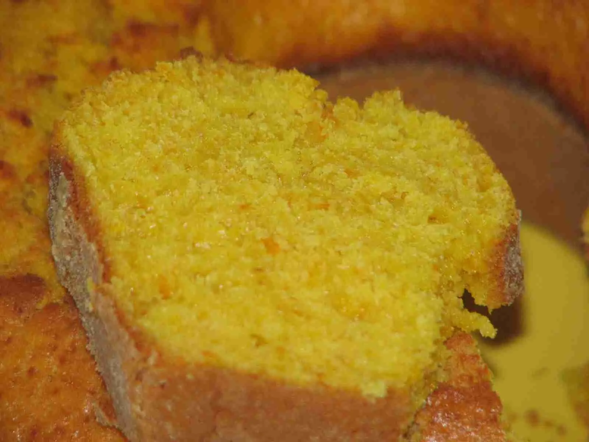

Bolo de Cenoura
O Melhor Bolo do Brasil

Ingredientes
Massa
- 1 xícara de cenoura picada
- 3 Ovos
- 1 xícara de açúcar
- 1 xícara (chá) de óleo
- 1 colher (sopa) de fermento em pó
- 1 e 1/2 xícara de farinha de trigo
- 1 lata de leite condensado
- 4 colheres (sopa) de chocolate em pó
- 1 colher (sopa) de margarina
Modo de Preparo
Massa
-
Junte no liquidificador a cenoura, os ovos, o açúcar e o óleo e bata
por uns 5 minutos.
-
Despeje este conteúdo em um recipiente, acrescente a farinha e o
fermento e misture bem.
- Unte com óleo uma forma de buraco central.
-
Leve ao forno em temperatura baixa, por mais ou menos, 40 minutos.
-
Para fazer a cobertura, utilize 1 lata de leite condensado, junte 4
colheres de sopa de chocolate em pó e uma colher de margarina
-
Quando engrossar (mas um pouco antes de começar a aparecer o fundo da
panela) está pronto.
- É só se deliciar.